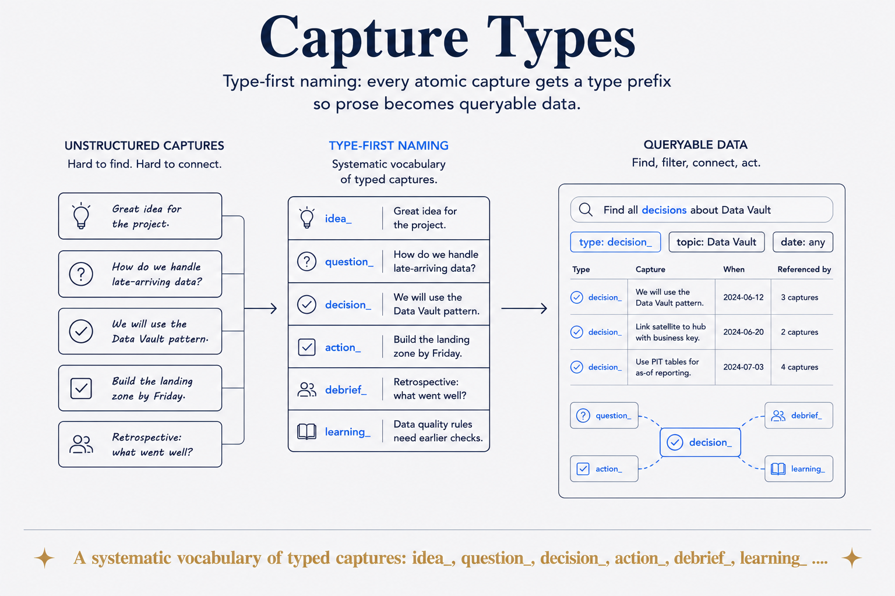

A systematic vocabulary of typed captures: idea_, question_, decision_, action_ …

Type-first naming: every atomic capture gets a type prefix (idea_, question_, decision_, action_, debrief_, learning_ …) so prose becomes queryable data.
A note titled "thoughts on the meeting" is prose. The same note as decision_... is data — because the type says what kind of thing it is, and kinds can be counted, filtered, rolled up and acted on. One prefix converts a file from something you read into something you can query.
It has to be decided at capture time, which is the only real cost. Two seconds while you're writing, versus an archaeology project later trying to infer intent from tone. Nobody ever successfully retrofits this.
The vocabulary is deliberately small — a handful of types, not a taxonomy. A type system nobody can remember gets ignored at exactly the moment it's needed: when you're in a hurry.